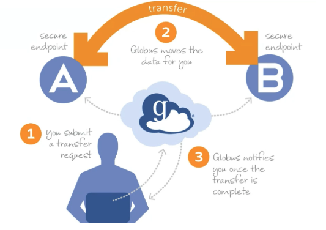
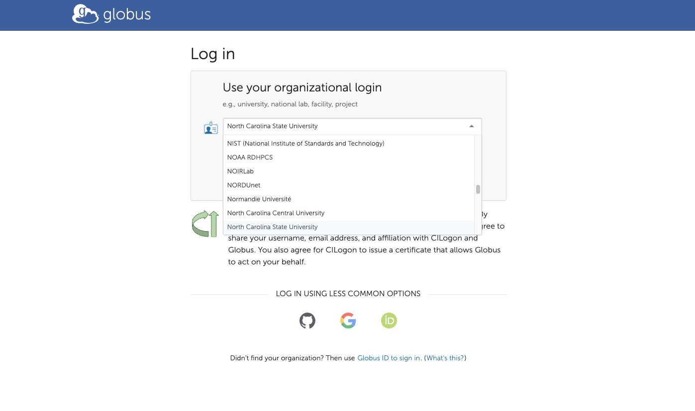
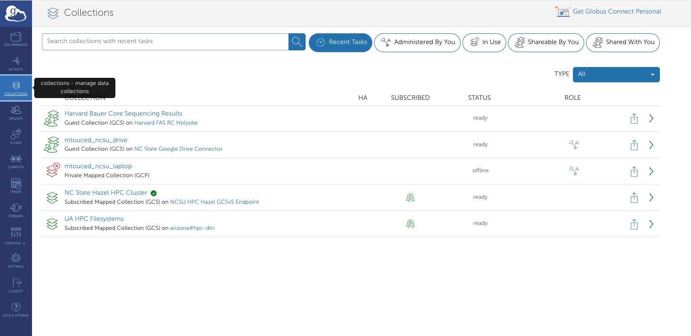
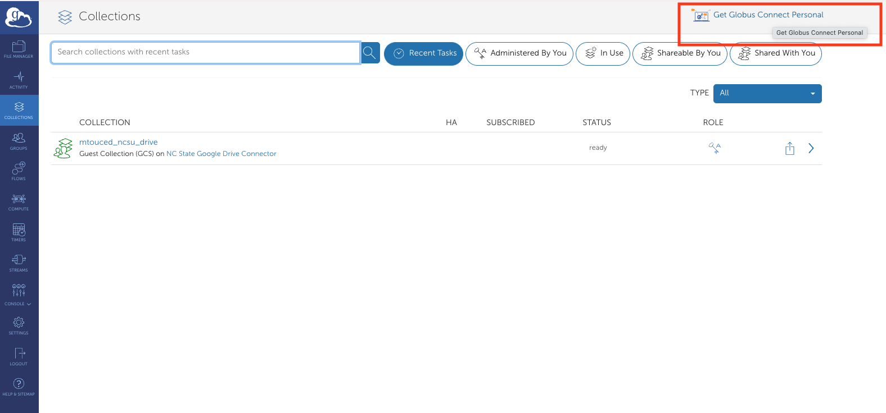
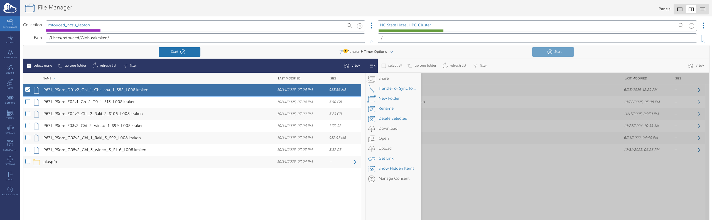
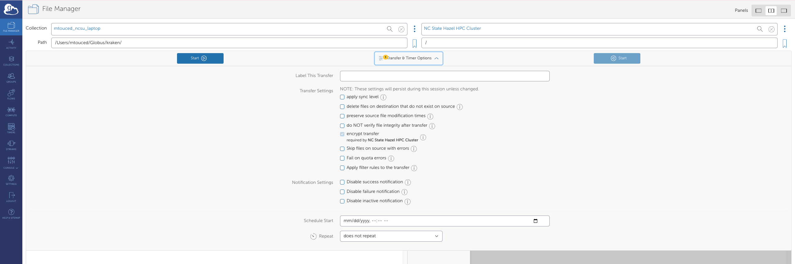
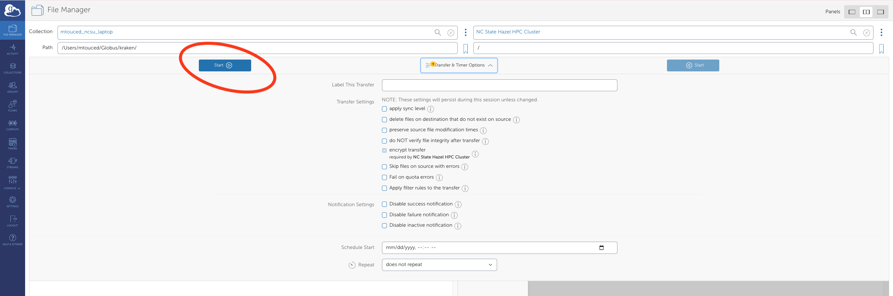
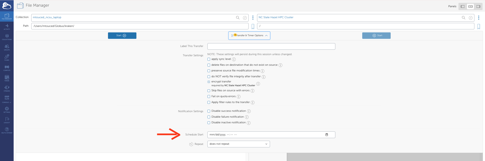
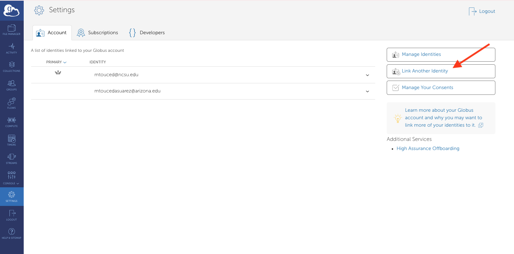

BRC Documentation: Globus
Overview
Globus is a secure, point-to-point file synchronization platform that orchestrates data transfers between endpoints. Unlike traditional file transfer methods, data never traverses through Globus servers—instead, Globus facilitates end-to-end encrypted communication between endpoints, allowing them to transfer files directly.

Key Terminology
- Collection
- A named set of files and folders that can be accessed through Globus
- Endpoint
- A computer or server that hosts files and can send or receive data via Globus
- Globus Connect Server
- Infrastructure deployed in front of storage platforms (e.g., Google Drive, research storage, HPC systems) to enable Globus transfers
- Globus Connect Personal
- A desktop application that transforms your local machine into a Globus endpoint for data transfers
- Globus Plus
- An enhanced subscription that provides additional features, including the ability to synchronize multiple endpoints and share data with external collaborators
Why Use Globus?
Globus offers several advantages over traditional file transfer methods:
- Reliability: Automatic retry and resume capabilities for interrupted transfers
- Speed: Optimized for high-performance transfers, especially for large datasets
- Convenience: Transfers continue in the background; no need to keep your browser open
- Security: End-to-end encryption and authentication through institutional credentials
- Scalability: Efficiently handles transfers from single files to millions of files
- Sharing: Easy and secure data sharing with collaborators at other institutions
Globus is particularly useful for:
- Transferring large datasets (>1 GB)
- Moving data to/from HPC systems
- Sharing data with external collaborators
- Automated/scheduled transfers
- Transfers with many small files
For quick transfers of small files (<100 MB), traditional methods may be simpler.
Getting Started
Prerequisites
Before you begin, ensure you have:
- Active NCSU credentials (Unity ID and password)
- Access to the systems you want to transfer data between
- A modern web browser (Chrome, Firefox, Safari, or Edge)
Creating a Globus Account
- Navigate to https://www.globus.org
- Click Log In in the top right corner
- Search for “North Carolina State University” in the organization list
- Click Continue and authenticate with your NCSU credentials
- Complete any first-time setup prompts

In my experience some of the first-time setup promts might take a couple of trys, you might need to refresh the page and do it again one of two times before it works
Connecting Your NCSU Google Drive
Follow these steps to make your NCSU Google Drive accessible through Globus:
Navigate to Collections on the Globus website

Search for
ncsu googlein the search barLocate and click on NC State Google Drive Connector
Click Collections in the top menu
- You may be prompted to grant permissions to Globus at this point
Click the Add Guest Collection button (top right)
- A popup will appear requesting your NCSU credentials
Configure your collection:
- Select the directory you want to share
- Enter a memorable Display Name (e.g., “My Research Data 2024”)
- Use the Description field to add details about the collection’s contents
Click Create Collection and authorize in the popup window
Choose descriptive collection names that clearly indicate what data they contain. This will help you and collaborators quickly identify the correct collection during transfers.
Conencting Your Local Machine
To transfer files to/from your personal computer, you’ll need to install Globus Connect Personal.
For a second set of instructions, see the University of Arizona HPC Globus guide.
- Download Globus Connect Personal from the Collections page (link in top right corner)

- Install and launch the application
- Log in using your NCSU credentials
- Authentication occurs via a browser popup
- Create a label for your local machine (e.g., “Meri-Laptop” or “Lab-Workstation”)
- Enter your preferred Display Name for this endpoint and click Save
Your local machine is now configured as a Globus endpoint and will appear under Collections.
Transferring Files
Once you have at least two collections set up, you can initiate transfers:
- In the File Manager, select your source collection (left panel) and destination collection (right panel)

- Navigate to and select the file(s) or folder(s) you want to transfer
- Configure Transfer & Timer Options:
- Sync options (sync only new/changed files)
- Transfer label for tracking
- Email notifications

- Click Start to begin the transfer

- Monitor progress in the Activity page (accessible from the left sidebar)
Large transfers can take time. Globus will continue transfers even if you close your browser, and can send you an email notification when complete.
- Label your transfers: Use descriptive labels to identify transfers in your activity history
- Enable email notifications: Get notified when large transfers complete
- Use sync mode for ongoing projects to only transfer changed files
- Verify transfers: Check the Activity log to confirm successful completion
- Delete carefully: Use the delete function in Globus rather than local deletion to avoid sync issues
Scheduled Transfers
Globus allows you to schedule transfers for specific times:

- When configuring a transfer, click Schedule Start
- Select the date and time for the transfer to begin
- Complete the transfer setup as usual
Linking Multiple Institutional Identities
If you’re affiliated with multiple universities or organizations that partner with Globus, you can link these identities to access endpoints from all institutions.
- Click Settings in the left sidebar
- Navigate to the Accounts tab
- Click Link Another Identity

- Complete the authentication process for your other institutional account
- Once linked, you can access and transfer between endpoints from both organizations
Example use case: Transfer data between NCSU’s HPC cluster and another university’s research storage system.
Advanced Features
Command Line Interface (CLI)
For power users and automation, Globus offers a command-line interface:
# Install Globus CLI
pip install globus-cli
# Login
globus login
# Transfer files
globus transfer : \
: \
--label "My Transfer"Python SDK
Automate transfers programmatically using the Globus Python SDK:
from globus_sdk import TransferClient, TransferData
# Initialize client
tc = TransferClient()
# Create transfer
tdata = TransferData(tc, source_endpoint_id, dest_endpoint_id,
label="My automated transfer")
tdata.add_item("/source/path/file.txt", "/dest/path/file.txt")
# Submit transfer
transfer_result = tc.submit_transfer(tdata)
print(f"Transfer ID: {transfer_result['task_id']}")Troubleshooting
Common Issues and Solutions
Issue: “Permission Denied” errors
- Solution: Verify you have appropriate permissions on both source and destination
- Check that Globus Connect Personal has access to the folders you’re trying to access
- Ensure you’re authenticated to both endpoints
Issue: Transfer is very slow
- Solution: Check your network connection
- Verify both endpoints are online and responsive
- Consider scheduling the transfer during off-peak hours
- Large numbers of small files transfer slower than fewer large files
Issue: Cannot find my endpoint
- Solution: Ensure Globus Connect Personal is running on your local machine
- Check that your endpoint is set to “Public” visibility if trying to access from elsewhere
- Verify you’re logged in with the correct identity
Issue: Transfer fails or gets stuck
- Solution: Check the Activity log for specific error messages
- Verify both endpoints have sufficient storage space
- Try canceling and restarting the transfer
- Check for file permission issues or locked files
Issue: Authentication keeps timing out
- Solution: Refresh your credentials by clicking on the endpoint and re-authenticating
- Some endpoints require re-authentication after a certain period
- Check if your institutional credentials have expired
If you encounter issues not covered here:
- Check the detailed error message in the Activity log
- Consult the Globus documentation
- Contact BRC support with your transfer ID and error details
- Include screenshots of any error messages
Best Practices
Data Management
- Organize before transferring: Well-organized source data transfers more efficiently
- Use consistent naming conventions: Makes it easier to locate files after transfer
- Document your transfers: Keep a log of what you transferred and when
- Test with small datasets first: Verify your workflow before transferring large amounts of data
Performance Optimization
- Bundle small files: Compress many small files into archives (.tar.gz, .zip) before transferring
- Transfer during off-peak hours: Network congestion can slow transfers
- Use sync mode: Only transfers changed files, saving time and bandwidth
- Avoid transferring unnecessary files: Filter out temporary files, caches, etc.
Security
- Review sharing permissions regularly: Remove access for completed collaborations
- Use strong passwords: Protect your institutional credentials
- Don’t share credentials: Each user should have their own Globus account
- Be mindful of data sensitivity: Ensure appropriate security measures for sensitive data
- Set expiration dates: For temporary data sharing arrangements
Frequently Asked Questions
Q: How long do transfers take?
A: Transfer time depends on file size, number of files, network speed, and endpoint performance. As a rough estimate, expect 50-100 MB/s on good connections. Globus provides time estimates in the Activity log.
Q: Can I pause and resume transfers?
A: Globus automatically handles interruptions. If a transfer is interrupted, it will automatically retry and resume from where it left off.
Q: Is there a file size limit?
A: Globus itself has no file size limits, but individual endpoints may have restrictions. Check with your system administrator for endpoint-specific limits.
Q: Can I transfer files from my phone?
A: While there’s no official mobile app, you can initiate and monitor transfers through a mobile web browser. The actual transfer happens between endpoints, not through your device.
Q: How much does Globus cost?
A: Basic Globus access is free for all NCSU users. Globus Plus ($50/year) offers additional features like sharing and synchronization.
Q: Can I use Globus for backups?
A: Yes! Use sync mode with scheduled transfers to create automated backup workflows. However, Globus should supplement, not replace, your institutional backup solutions.
Q: What happens if I close my browser during a transfer?
A: Nothing! Transfers continue running on Globus servers. You can close your browser, shut down your computer (if not a source/destination), and the transfer will complete.
Additional Resources
Documentation
Training and Tutorials
Support Channels
- BRC Support: ncsate_brc@ncsu.edu
- NCSU OIT Help Desk: 919-515-HELP (4357)
- Globus Support: support@globus.org
Document version: 1.0 | Last updated: 11/19/2025 | For questions or assistance, contact the BRC support team at ncsate_brc@ncsu.edu